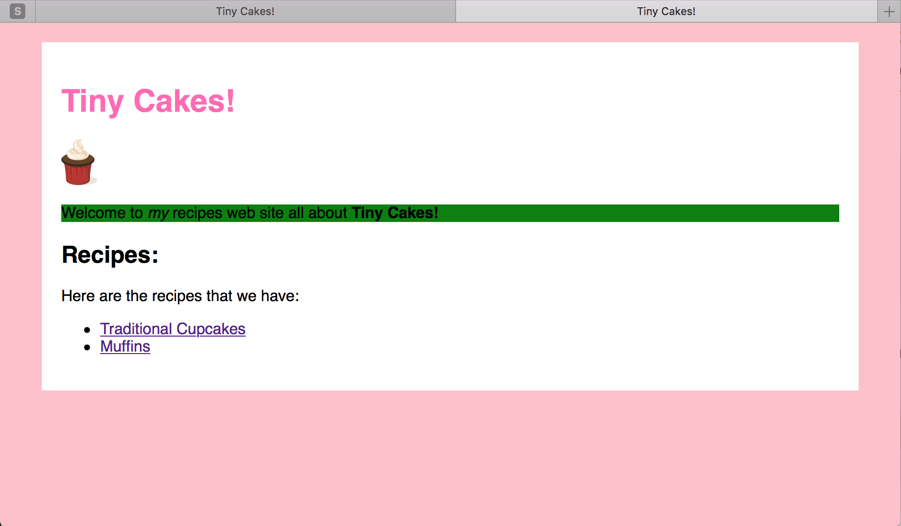

Etapy:
Step 8 - CSS Selectors
Selectors
Selectors are what let us specify (or select) the parts of the page which a set of style declarations will apply to.
So far we’ve only specified tag names as selectors. This is useful because it means the styles will be applied to every one of those elements. But sometimes you only want to a set of rules to apply to specific elements. We do this with different types of selectors.
Let’s make our site title (“Tiny Cakes!”) hot pink.
It was a <h1> so add the following to our stylesheet:
h1 {
color: #ff69b4;
}
Refresh the homepage and it should look how we want it it.

But then if you look on the recipe pages the recipe titles are also hot pink and we don’t want that. So what do we do?
There are two attributes that we can add to any element to allow us to apply styles more specifically: class and id.
Use class when there might be multiple of the element on one page.
Use id when there should only be a single one of the element on each page.
So let’s update our <h1> on the homepage to have an id:
<h1 id="sitetitle">Tiny Cakes!</h1>
And now update our CSS so our h1 selector is more specific:
h1#sitetitle {
color: #ff69b4;
}
The # in the selector means what follows the # is an id.
Now only the <h1> with the id of sitetitle should be hot pink. The ones on the recipes pages should be the default black.
That’s better, now how about the headings on the recipe pages for ingredients, etc.? Let’s fancy them up a bit.
First, update the ingredients, method, and variations headings to have the recipepart class like this:
<h2 class="recipepart">Ingredients:</h2>
Make sure you do that for each <h2> on both recipe pages.
Now add the following CSS to our stylesheet:
h2.recipepart {
background-color: #f5f5f5;
border: 1px solid #dcdcdc;
border-left: 10px solid grey;
padding: 10px 0px 8px 10px;
}
The . in the selector means the next part is a class.

So what did we do here?
- Set the background colour to a very light grey (
#f5f5f5). - Put a 1px grey (
#dcdcdc) border around it. - Changed the left border specifically to be 10px thick and the color
grey - Set the padding so it looks nicer.
When we set the padding, we supplied four values at once.
You can do this with padding and margin.
There are four different ways you can supply values to these properties:
- One value gets applies to all four sides.
- For two values, it uses the first one for top and bottom, and the second for left and right.
- For three, the first one is the top, the second is both left and right, and the third is the bottom.
- And for four, they are used for top, right, bottom, left respectively.
There are also four extra properties for padding and margin for each side of the element:
padding-top,padding-left,padding-right&padding-bottommargin-top,margin-left,margin-right&margin-bottom
You could also use these individually to set a side when the style should only affect one.
We also set the border twice here.
We did this because we wanted three sides to be the same, but the left one different.
We could have set all four sides individually, but this is shorter.
This works because the order of style declarations matters.
If you reverse the order of those two lines, the border-left declaration gets overwritten by the border one.
So that looks cool but a bit “grey”. Lets make the thicker left border a different colour for each them.
Elements can have more than one class, you just need to put a space between them.
So now update the <h2> tags so they each have the additional class that matches their subject:
Like this:
<h2 class="recipepart ingredients">Ingredients:</h2>
<h2 class="recipepart method">Method:</h2>
<h2 class="recipepart variations">Variations:</h2>
Then add the following CSS to our stylesheet:
h2.ingredients {
border-left-color: #00ced1;
}
h2.method {
border-left-color: #00bfff;
}
h2.variations {
border-left-color: #3cb371;
}

CSS lets us write multiple different styles whose selectors overlap. This lets us apply a set of styles to multiple elements, and then additional styles individually. This is much nicer than having to write all of those styles out for each.
The Global Selector
There are much more powerful types of selectors than just these ones, you can also combine different types too. We aren’t going to be using those but you can learn more about them at https://developer.mozilla.org/en-US/docs/Learn/CSS/Introduction_to_CSS/Combinators_and_multiple_selectors
However there is one special selector, * the global selector which targets all elements which warrants talking about here.
The global selector is mostly useful in combination with other selectors, but can be it is really useful when experimenting. Especially with borders.
For example try adding the following CSS at the bottom of your stylesheet file:
* {
border: 1px solid black;
}
That will draw a solid black border around every element on the page that can have a border. This is useful for getting a feel for what space different elements occupy on your page.

You would of course remove this style before uploading your pages anywhere.
How weird HTML can break your styles
Before we head on to the next step, remember back in step 3 we mentioned that nesting some tags together might look okay at first glance but not work well with CSS?
I showed this example.
<p>
Welcome to <em>my</em> recipes web site all
about <strong>Tiny Cakes!</strong>
<h2>Recipes:</h2>
Here are the recipes that we have:
</p>
By default this will look like two paragraphs with a heading between them. But if you add the following style (which gives all paragraphs a green background) you still see something strange.
p {
background-color: green;
}

The second paragraph doesn’t have the green background. Why?
If you use your browser dev tools to inspect the page you will see that the second paragraph isn’t actually in <p> tags.
This happens because what the HTML didn’t actually make sense (a heading in a paragraph) so the browser did some fiddling to try to get something it could render.
Be very careful of trying to do any weird tricks with your HTML. Try to keep things simple because you don’t want the browser to have to do any tricks to get it to work because it might not work the way you expect.
And it might turn out very differently in different browsers too.